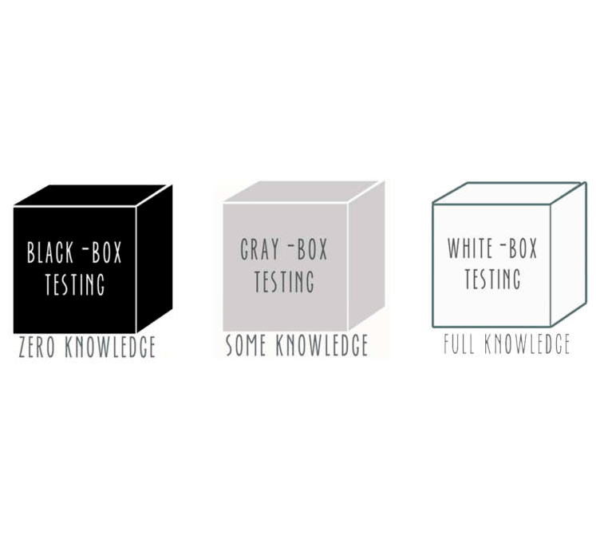
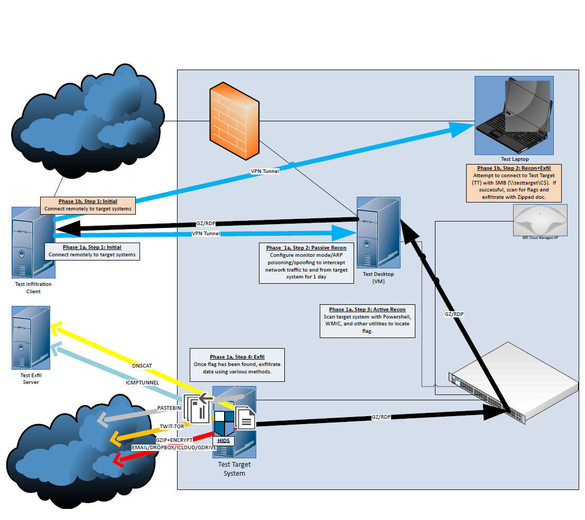

Featured Projects
-
IPINT (JavaScript Chrome Extension)
GitHubChrome extension written in Javascript. Completely stand-alone addition to Chrome that assists with investigations using a variety of Open-Source Intelligence sites.
Current version can be used to assist in incident response and ongoing SOC investigation processes. Future plans include the ability to read page data and color IP address based on detection by sites. -
PowerSteg (PowerShell)
GitHubPowerShell utility created to embed commands or C2 information in images, mainly to evade L7 firewall and AV detection.
-
HIPAA Risk Assessment
GitHubRedacted template from an old HIPAA/Meaningful Use Risk Assessment that I conducted.
PowerShell
-
PowerSteg
GitHubPowerShell utility created to embed commands or C2 information in images, mainly to evade L7 firewall and AV detection.
-
Power Shift
GitHubUtility that will shift the LSB and add a file extension, to facilitate downloading binary/executable files into a network without matching IDS/IPS signatures.
Use one of the oldest encryption techniques to evade the newest firewalls! -
RedVsBlue
GitHubPowerShell form-based utility to evaluate local system's incident preparedness, improve logging locally, as well as deploy scripts to protect organizational assets.
-
Monitor Outbox
GitHubMonitorOutbox.ps1 is a utility that constantly scans your Outlook outbox, and creates a popup message if there are any unsent emails in it.
-
Get Wallpapers
GitHubA utility that uses Reddit to download new wallpapers, and rotate through them. Created as a compliment to PowerSteg, for use as a large image repository that would enable execution of large commands and C2 functions.
-
scanServices
GitHubQuick utility for checking what services are running on all systems in an OU. Use to scan for service account configs for resetting passwords.
-
Server Service Scanner
GitHubScan a number of servers for non-Windows Server services, with a switch to configure known services as well, to ignore those if you only want to look for suspicious services installed on your servers.
-
-
Sinkhole
GitHubDownload popular malware lists and re-route traffic to the bitbucket to prevent damage from being done if you get malware.
-
grayb0x
GitHubThis utility is intended for security analysts on whitebox(blue team) and blackbox(red team) engagements.
It is broken out into local and network functionality to provide control over SOC visibility into activities being conducted. -
Python
-
Blind SQL Injector
GitHubIterate through characters one at a time to figure out the value of a record.
-
-
Youtube Subtitle Wordlist Generator
GitHubDoes what it says.. feed a subtitle file downloaded from Youtube and this will output a wordlist that does not contain duplicate words, and is arranged to be used with Hashcat or other similar utilities.
-
JS Redirector Decode
GitHubDuring a high-profile SOC engagement, we found a lot of Javascript redirector files, which were painful to decode manually with Cyber Chef. I created this Python script to simplify the process for myself and other SOC analysts.
Javascript
-
IPINT
GitHubChrome extension written in Javascript. Completely stand-alone addition to Chrome that assist with investigations using a variety of Open-Source Intelligence sites.
Current version can be used to assist in incident response and ongoing SOC investigation processes. Future plans include the ability to read page data and color IP address based on detection by sites. -
Tasks To Do
GitHubChrome extension written in Javascript. Completely stand-alone addition to Chrome that you can use to track daily and long-term tasks.
Used as a learning project so I could better understand the Chrome storage sync API, in order to improve some of my other projects, like IPINT.
-
Unhide Elements
GitHubUncover hidden nodes on a webpage including forms, divs, spans, etc.. Useful in pen tests and CTF challenges, to find things that developers don't want end users to see. I have used this on at least 2 occasions to find client-side vulnerabilities in apps and CTFs.
Reports
-
Insider Threat Test Diagram
GitHubQuick and dirty diagram of an insider threat test. For use as a guideline/template on future engagements.
 -
HIPAA Risk Assessment
GitHubRedacted template from an old HIPAA/Meaningful Use Risk Assessment that I conducted.
Presentations
-
SQL
-
My SQL reports have all been created for work, so I do not have anything to share here. I do have a fair amount of SQL experience, but it's not something that I've programmed outside of my professional career.
HTML
-
Security Advice
GitHubSecurity Advice is a small Github repository that I created to attempt to help new IT Security professionals in beginning their careers.
What I noticed that prompted me to write this repo, was that a good deal of people were showing up in forums online knowing only that they thought IT Security was cool and exciting, but not where to get started.
In order to do my part to help out, I made this repo to point them in the right direction.
Batch
-
Unfortunately, all of my batch scripting has been done during work hours, so I do not have any scripts to share. You will just have to take my word that I have extensive batch scripting experience.
I have primarily used Batch to deploy programs, modify Windows settings, tweak system images prior to deploying to production, and perform repetative system administrator tasks such as rebooting computers or servers, or modifying files remotely to troubleshoot issues. Back to TopBash
-
Similar to my batch scripting experience, most of my bash scripting has been done during work hours, so I do not have any to share publicly.
Since I have mainly worked as a Windows System Administrator, I have more experience with PowerShell and batch, but I do have a good deal of experience at the Linux command line, and I am comfortable creating bash scripts. Back to TopDonations
-
I have released all of my code under the GPLv3 license, but I always appreciate and accept donations.
If any of my apps have helped you, or if you just feel like being charitable, please consider donating via Paypal, Zelle, Cash App or Bitcoin.
Paypal: jpkelleyak@gmail.com
Zelle: jpkelleyak@gmail.com
Square Cash App: $jpkelleyak
Bitcoin:3QmBSuuoyeHtWLrH9hDxj2FUsTCahqUkaM
-
-
-